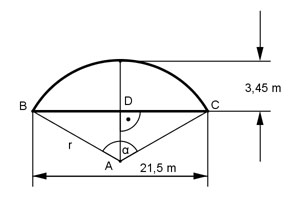

Aufgabe 104 Ein Brückenbogen hat die Form eines Kreisbogens. Er hat eine Spannweite von 21,5 m und eine Höhe von 3,45 m. Wie groß ist sein Radius r und sein Mittelpunktswinkel α?

Im Dreieck ADB: Satz von Pythagoras: r² = (r – 3,45)² + (21,5/2)² r² = r² - 6,9r + 11,9 + 115,6 |-r² 0 = 127,5 – 6,9r | +6,9r 6,9r = 127,5 | :6,9 r = 18,5 m 21,5/2 cm 10,75 cm sin α/2 = ------------ = ------------ = 0,5811 r 18,5 cm --> α/2 = 35,5° α = 2 * 35,5° = 71°